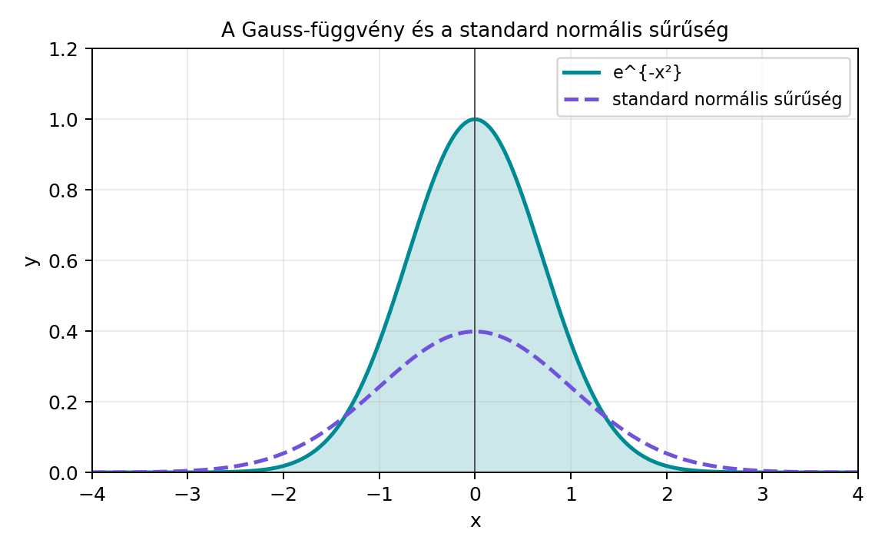

A derékszögű koordinátás kettős integrál nagyon
hatékony téglalapokon és olyan normáltartományokon, ahol a határokat
-szerint
vagy
-szerint
tudjuk leírni. Sok gyakorlati feladatban azonban a tartomány kör
alakú, körgyűrű vagy körcikk;
ilyenkor a kör határoló görbéje derékszögű koordinátákban
típusú gyökös kifejezés, az integrandus pedig gyakran függ
-től.
Gondoljunk például egy kör alakú öntözőfejre,
amelynek intenzitása csak a középponttól mért
távolságtól függ: a vizet
mm/h sűrűséggel juttatja ki. Ha a teljes vízhozamot akarjuk kiszámolni
egy körlapon, akkor természetesebb lenne a helyzetet a
sugár és a szög segítségével leírni,
nem pedig
-szel
és
-nal.
Ehhez bevezetjük a polárkoordinátás integrálást, és
ennek erejét egy klasszikus, elemi primitívvel nem kiszámítható
integrálon, a Gauss-integrálon is megmutatjuk.
25.3.2 Szemléletes kép: a
polártéglalap területe
A polárkoordináták lényegében a sík „sugaras” leírása:
ahol
a pont origótól mért távolsága,
pedig a pozitív
-tengellyel
bezárt szög. A
halmazt polárkoordinátákban polártéglalapnak
nevezzük:
A megfelelő síkbeli alakzat egy körgyűrűcikk: két
origó középpontú körív és két félegyenes határolja.
Rajzolhatjuk a síkon egy olyan cella területét, amelyet a sugár
,
a szög pedig
intervalluma jelöl ki. A cella nem téglalap: a külső ív
hossza nagyobb, mint a belső ívé. A belső ív hossza
,
a külsőé
.
Ha
és
kicsi, a cella közelítőleg egy
szélességű és
hosszúságú téglalap, ezért
Pontosabban: a körgyűrűcikk területe
,
tehát az
helyett a cikk középsugara lép fel. Finomodó
felosztásnál ez a különbség eltűnik, és határértékben a
területelem
adódik.
Az alábbi ábrán a kiemelt cella
,
:
,
,
a belső ív
,
a külső
hosszú. A pontos terület
,
ami éppen
(középsugárral); a belső
sugárral számolt
kb.
-kal
kisebb, de ez a relatív eltérés
esetén eltűnik.
Statikus változat (mint a PDF-ben)
Polárcella: körgyűrűcikk, területe
A számolás mechanikai kulcsa éppen ez az
szorzó: aki elfelejti, hibás területet és hibás integrálértékeket
kap.
25.3.3 Definíció és a
polárkoordinátás integrálási tétel
Először pontosítjuk a polárkoordinátás tartományok leírását.
Definíció. Legyenek
és
folytonos függvények, amelyekre
minden
-re.
A síkbeli
tartomány polárkoordinátás leírása ekkor
Speciálisan, ha
és
,
akkor polártéglalapról beszélünk.
Tétel (polárkoordinátás integrálás). Ha
folytonos a fenti
tartományon, akkor
A határok sorrendje: előbb
szerint integrálunk a
szögintervallum mellett, majd
szerint. A belső integrálásnál
-t
állandóként kezeljük.
Bizonyítási vázlat (polártéglalapra). A bizonyítás
lényege a fenti területelem-levezetés. Tekintsünk először egy
polártéglalapot. Osszuk fel
-t
osztópontokkal,
-t
pedig
osztópontokkal; a
tetszőleges mintaszög. Egy cella területe
Válasszuk mintapontnak a cella középsugarát:
Ekkor
Az
függvény Riemann-féle közelítő összege tehát
Ez éppen az
függvény Riemann-összege az
-sík
téglalapján. A felosztás finomságát nullához közelítve a Riemann-összeg
határértéke mindkét oldalon a megfelelő kettős integrál, tehát
Ha a tartomány általánosabb,
alakú, akkor ugyanezt a gondolatot alkalmazzuk úgy, hogy a belső
felosztás határai most minden rögzített
mellett
és
.
A teljes bizonyítást (hogy a körgyűrűcikk-felosztás összegei ugyanahhoz
a kettős integrálhoz tartanak) az Általános
változócsere és a Jacobi-determináns alfejezet változócsere-tétele
adja.
Megjegyzés. A tétel az általános változócsere
speciális esete: a
leképezés Jacobi-determinánsának abszolút értéke éppen
.
Ezt a képet az Általános változócsere és a
Jacobi-determináns alfejezetben tárgyaljuk részletesen; itt a
területelem geometriai levezetése elegendő.
Polárkoordinátás integrálás receptje - A
négy lépés rendszeres követése segít elkerülni a leggyakoribb
hibákat.
Készíts vázlatot a tartományról a síkon, és jelöld be a
polárhatárokat.
Határozd meg a szögintervallumot
,
majd rögzített
mellett a sugár határait
és
.
Helyettesíts be:
,
,
és ne feledd:
.
Integrálj először
szerint (a
rögzített), majd
szerint.
Ellenőrizd az eredményt: ha az integrandus
,
az integrál a tartomány területe; mértékegység és nagyságrend is
ellenőrizhető.
25.3.5 Kidolgozott példák
25.3.5.1 1. példa: az egységkör
területe
Számítsuk ki az
integrált, ahol
az egységkörlap. Polárban a körlapot a
egyenlőtlenségek írják le. A tétel szerint
A belső integrál:
A külső integrál:
Ellenőrzés: az egységkör területe valóban
.
Ha elhagytuk volna az
tényezőt, hibásan
-t
kaptunk volna.
25.3.5.2 2. példa: az átlagos
távolság az egységkörön
Számítsuk ki a
integrált ugyanezen a
egységkörlapon. Polárban
így
A belső integrál:
A külső integrál:
Mivel az egységkör területe
,
az origótól mért átlagos távolság az egységkörön
Ez jó nagyságrendű: a távolság
és
között van, az átlaga pedig
.
25.3.5.3 3. példa: körgyűrű
integrálja
Legyen
körgyűrű, és számítsuk ki az
integrált. Polárban a körgyűrű:
,
,
az integrandus pedig
Ezért
A belső integrál:
A külső integrál:
25.3.5.4 4. példa: normáltartomány,
a kardioid területe
Nem minden polárban leírható tartomány polártéglalap. Legyen
például
A határgörbe
egy kardioid. Számítsuk ki
területét, azaz az
integrált:
A belső integrál rögzített
mellett:
Ezután a külső integrál:
Használjuk a
azonosságot:
és
,
ezért
A kardioid területe tehát
.
25.3.6 A Gauss-integrál kiszámítása
polárkoordinátákkal
Most elérkeztünk az alfejezet egyik fő eredményéhez. A
integrál, az úgynevezett Gauss-integrál, az analízis
egyik legismertebb improprius integrálja. Az
függvénynek nincs elemi primitív függvénye, tehát az
integrált a Newton–Leibniz-formulával nem tudjuk közvetlenül
kiszámítani. A polárkoordinátás kettős integrál azonban elegáns utat
ad.
Tétel (Gauss-integrál). Az improprius integrál
konvergens, és értéke
Bizonyítás.
1. lépés: konvergencia. Elég a
félegyenest vizsgálni, mert
páros függvény. Az
esetén
,
ezért
Az Improprius integrálok alfejezetben láttuk,
hogy
konvergens, így az összehasonlító kritérium miatt
is konvergens. A
intervallumon az integrandus folytonos, tehát ott az integrál véges.
Ezért az egész
konvergens, és így
is.
2. lépés: a négyzet kettős integrálként. Jelölje
.
Mivel az integrandus nemnegatív, a teljes síkon vett kettős integrál és
az egyszerű integrálok szorzata között fennáll:
A nemnegatív integrandusra vonatkozó felcserélhetőséget itt
elfogadjuk; a részletes tárgyalás az improprius többes integrálokhoz
tartozik.
3. lépés: áttérés polárkoordinátákra. Az
sík polárkoordinátás leírása:
Továbbá
és
,
így
A belső integrál most már elemi módon kiszámítható, mert az
szorzó éppen a helyettesítéshez kell. Legyen
tehát
.
A határok:
mellett
,
esetén
.
Ezért
A külső integrál:
Így
Mivel
,
hiszen pozitív függvény integrálja, vehetjük a pozitív
négyzetgyököt:
∎
Megjegyzés. A bizonyítás 2. lépésében a véges
intervallumokon vett integrálok szorzatára és a teljes sík improprius
integráljára vonatkozó állítást a nemnegativitás garantálja; a precíz,
általános eszköz a Tonelli-tétel. A polárra való
áttérés az Általános változócsere és a
Jacobi-determináns alfejezetben a Jacobi-determináns nyelvén is
igazolható lesz.
25.3.6.1 A Gauss-görbe ábrája

A Gauss-függvény és a standard normális
sűrűség - Az e^{-x²} görbe alatti teljes terület √π ≈ 1,77245; a
standard normális sűrűség alatti terület 1. Az ábra a (-4,4)
intervallumon közelít.
A szaggatott vonal a standard normális eloszlás sűrűségfüggvénye,
amelyet a következő pontban kapcsolunk a Gauss-integrálhoz.
25.3.7 A normális eloszlás normáló
állandója
A statisztikában központi szerepet játszó standard normális
eloszlás sűrűségfüggvénye
Ahhoz, hogy ez valóban sűrűségfüggvény legyen, teljesülnie kell, hogy
a teljes integrálja
.
A Gauss-integrálból ezt azonnal megkapjuk. Helyettesítsünk
25.3.9 Valós életbeli alkalmazás:
csepegtető öntözés intenzitása
Tegyük fel, hogy egy csepegtető öntözőfej a
középpontjától mért
távolságban
intenzitással juttat ki vizet
mértékegységben. Ez azt modellezi, hogy a középpontban maximális a
vízkijuttatás, attól távolodva pedig fokozatosan csökken; az
kitevő miatt a csökkenés gyorsabb a távoli pontokban.
Tegyük fel, hogy a nedvesített területet egy
sugarú körlappal közelítjük. A teljes vízhozamot a
integrál adja, ahol
.
Polárban:
A belső integrálhoz legyen
tehát
.
A határok:
mellett
,
mellett
.
Így
Mivel
,
ezért
A külső integrál:
A teljes vízhozam tehát körülbelül
Értelmezés. A középpontban az intenzitás
,
a
-es
peremen pedig
Ha a teljes
sugarú körlapon mindenütt a maximális
intenzitás érvényesülne, a vízhozam
lenne. Az exponenciális csökkenés miatt a tényleges érték ennél kisebb,
,
ami reális arányú.
A modell korlátai. Feltettük a tökéletes
körszimmetriát, pedig a szél, a talaj lejtése és a csepegtető
elemek egyenetlensége zavarja azt. Az
alak is csupán egyszerű közelítés; valós mérési adatok alapján az
együtthatókat illeszteni kell. A körlap sugara sem éles határ: a
valóságban a víz fokozatosan terjed, és a
-en
kívül is van nedvesség.
25.3.10 Tipikus hibák
Az
tényező elfelejtése a polárkoordinátás integrálban. Aki
-t
ír, az egységkör területére
értéket kap
helyett. A területelem mindig
.
A szögintervallum rossz megadása. Teljes
körlapnál
egy teljes kört fut be:
(vagy ezzel egyenértékűen
,
illetve
),
nem
.
A felső félkörnél viszont
.
Ha a tartományt félkörre korlátozzuk, a külső integrált is ennek
megfelelően kell beállítani.
A belső és külső határok felcserélése. Amikor a
tartomány polárleírása
,
a
szerinti integrált kell először elvégezni, mert a határai függenek
-től.
Ha mégis a szög szerint integrálnánk először, a sugár függvényében
kellene megadni a szög határait, ami gyakran nehezebb.
A Gauss-integrálban az
primitívjének keresése. Az
integrálnak nincs elemi primitívje. A poláros trükk éppen azért működik,
mert az
tényezővel együtt az
integrál már helyettesítéssel kiszámítható.
A normális eloszlás normáló konstansának
elrontása. A standard sűrűségben a kitevő
,
nem
.
A helyettesítésnél a
lépést gyakran elfelejtik, ami hibás
vagy
értékekhez vezet.
25.3.11 Önellenőrzés
Mekkora a
polártéglalap területe?
Írd fel polárkoordinátákban az
integrált, ha
az origó középpontú
sugarú teljes körlap.
Miért nem tudjuk a Gauss-integrált a Newton–Leibniz-formulával
közvetlenül kiszámítani?
Igaz-e, hogy
?
Indokold.
Számítsd ki az
integrált, ha
az
körgyűrű.
25.3.12 Feladatok
1. feladat (A). Számítsd ki az
integrált, ahol
.
2. feladat (A). Számítsd ki az
integrált, ahol
az origó középpontú
sugarú körlap.
3. feladat (B). Számítsd ki az
integrált a felső fél egységkörlapon, azaz
-n. Értelmezd
az eredményt a tartomány
-koordináta
szerinti súlypontja szempontjából.
4. feladat (B). Számítsd ki annak a tartománynak a
területét, amelyet polárkoordinátákban a
,
egyenlőtlenségek adnak meg.
5. feladat (C). Bizonyítsd be, hogy
Ez az eredmény később a gravitációs és elektrosztatikus potenciálok
vizsgálatában tér vissza.
6. feladat (D). Egy izzószálas hősugárzó a
középpontjától
méter távolságban
teljesítménysűrűséget ad
-ben.
Becsüld meg a
sugarú körlapon kisugárzott összteljesítményt wattban. Mennyi lenne az
összteljesítmény, ha a sugárzás mindenütt a középponti értéken lenne?
Mit mond ez a modellről?
25.3.13 Megoldások
25.3.13.1 Önellenőrzés –
válaszok
A terület
.
Ez egy
sugarú félkörlap, amelynek területe valóban
.
Polárban
,
a körlap
,
:
Az
függvénynek nincs elemi primitívje, azaz nincs olyan elemi függvény,
amelynek deriváltja
.
Ezért a Newton–Leibniz-formula nem alkalmazható közvetlenül.
Hamis. A helyettesítéssel
,
nem
.
Polárban az integrandus
,
a körgyűrű
,
.
Így
25.3.13.2 Feladatok megoldása
1. feladat. Az egységkörlap
,
,
az integrandus
.
Tehát
A belső:
.
A külső:
.
Ellenőrzés: ez a körlap poláris tehetetlenségi nyomatéka (egységnyi
sűrűséggel); az
átlaga a körlapon
,
így
.
2. feladat. Polárban
.
Így
A belső: legyen
,
,
így
A külső:
.
3. feladat.
polárban
,
,
és
.
Így
Az első tényező
,
a második
,
ezért az integrál
.
A felső félkör területe
,
így az
-súlypont
koordináta:
Ez
fölött van, a felső félkör szimmetriájának megfelelően.
4. feladat. A terület:
5. feladat. Polárban
,
;
a teljes sík
,
.
Így
A belső integrálban legyen
,
.
Ekkor
A külső integrál
.
6. feladat. A
sugarú körlapon a sugárzott összteljesítmény:
A belső integrálhoz legyen
,
,
tehát
.
A határok:
mellett
,
mellett
.
Így
Mivel
,
ezért a belső érték
.
A külső integrál:
A középponti teljesítménysűrűség
.
Ha a teljes
sugarú körlapon mindenütt ennyi lenne, akkor
lenne. A tényleges érték ennél kisebb, mert a sugárzás a távolsággal
csökken. A modell egyszerű körszimmetrikus közelítés; valós hőforrásnál
a sugárzási iránykarakterisztika bonyolultabb lehet.
25.3.14 Rövid összefoglaló
Ha egy síkbeli
tartományt polárkoordinátákban az
,
egyenlőtlenségekkel írunk le, akkor folytonos
esetén
A polárkoordinátás integrálás és a Gauss-integrál klasszikus,
tankönyvi anyag; a fejezet a megadott kiindulópontok (OpenStax Calculus
Volume 3, MIT OCW 18.02SC, Paul’s Online Math Notes) témáit követi. A
fenti bizonyítások a szokásos egyetemi előadások gondolatmenetét
tükrözik. Történeti vagy mérési adatot nem állítottam; a valós
alkalmazásban szereplő öntözési és sugárzási paraméterek szemléltető
modellek, nem mért értékek.